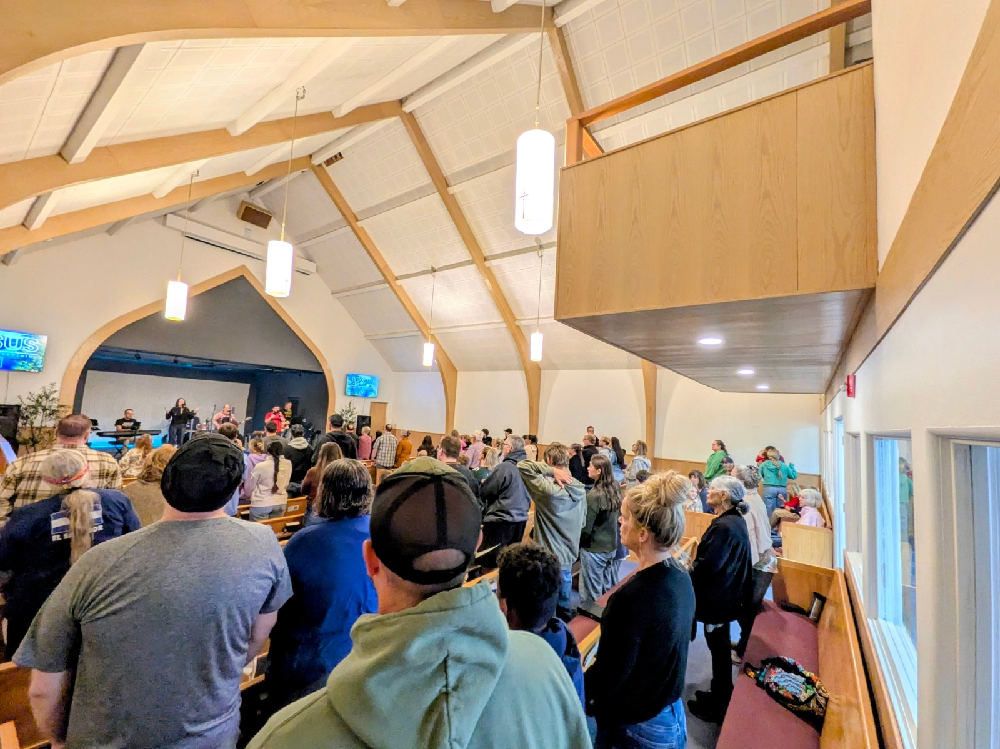
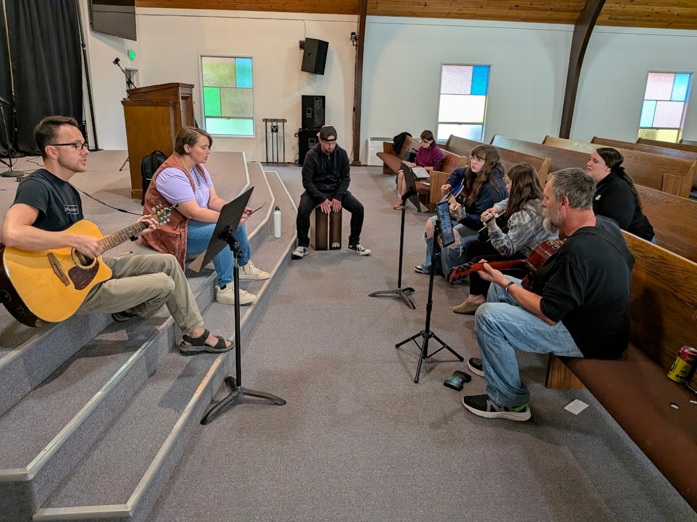

Word-centered
We teach Scripture clearly and verse by verse, trusting God’s Word to shape our lives.

Who we are
A family of ordinary people learning to follow Jesus together in Albany, Oregon.
Why we exist
We exist to grow people deeper in God’s Word, bring hope and healing to families, and shine the light of Jesus throughout Albany.
We believe the local church should be a place where people can know Jesus, grow together, and stand firm in truth.
We teach Scripture clearly and verse by verse, trusting God’s Word to shape our lives.
We want everything we do to point people to the grace, truth, and hope found in Jesus.
We serve families, love our neighbors, and shine the light of Jesus throughout Albany.
Life at Verbatim
Our church family gathers in different places and settings, but Jesus and His Word stay at the center.


Sunday at 10:00 AM · 1305 Hill St SE, Albany
Plan your visit ↗